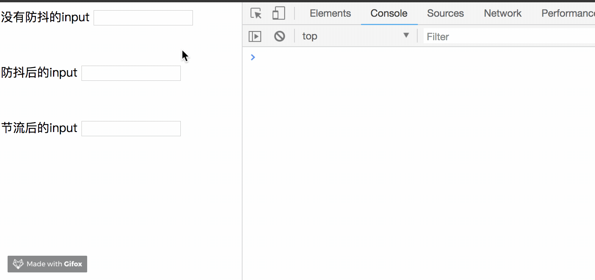
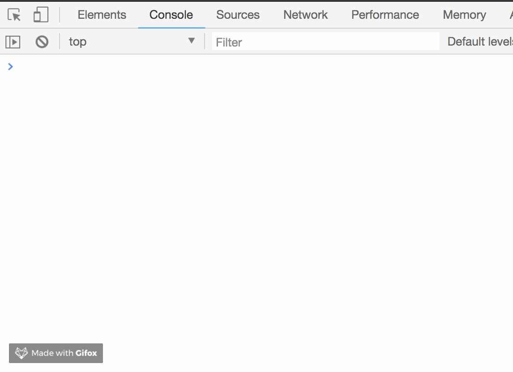

函数防抖(debounce)
概念:在事件被触发n秒后再执行回调，如果在这n秒内又被触发，则重新计时。
实现思路如下，将目标方法（动作）包装在setTimeout里面，然后这个方法是一个事件的回调函数，
如果这个回调一直执行，那么这些动作就一直不执行。为什么不执行呢，我们搞了一个clearTimeout，
这样setTimeout里的方法就不会执行！ 为什么要clearTimeout呢，我们就需要将事件内的连续动作删掉嘛！
待到用户不触发这事件了，那么setTimeout就自然会执行这个方法。
1 | //模拟一段ajax请求 |
效果如下：

可以看到，我们只要按下键盘，就会触发这次ajax请求。不仅从资源上来说是很浪费的行为，
而且实际应用中，用户也是输出完整的字符后，才会请求。下面我们优化一下：1
2
3
4
5
6
7
8
9
10
11
12
13
14
15
16
17
18
19
20
21
22
23//模拟一段ajax请求
function ajax(content) {
console.log('ajax request ' + content)
}
function debounce(fun, delay) {
return function (args) {
let that = this
let _args = args
clearTimeout(fun.id)
fun.id = setTimeout(function () {
fun.call(that, _args)
}, delay)
}
}
let inputb = document.getElementById('debounce')
let debounceAjax = debounce(ajax, 500)
inputb.addEventListener('keyup', function (e) {
debounceAjax(e.target.value)
})
效果：
加入了防抖以后，当你在频繁的输入时，并不会发送请求，只有当你在指定间隔内没有输入时，才会执行函数。
如果停止输入但是在指定间隔内又输入，会重新触发计时。
1 | let biu = function () { |
运行结果：

如果在时间间隔内执行函数，会重新触发计时。biu会在第一次1.5s执行后，每隔1s执行一次，
而boom一次也不会执行。因为它的时间间隔是2s，而执行时间是1s，所以每次都会重新触发计时。
防抖就像技能的GCD(公共冷却时间),正在转gcd的时候再次释放了技能就又要重新计时。
将debounce抽离出来并简化写法:1
2
3
4
5
6
7
8
9
10
11
12function debounce(fun, delay) {
var timer;
return function(){
let that = this;
let args = arguments;
clearTimeout(timer);
timer = setTimeout(function() {
fun.apply(that,args)
},delay)
}
}
函数节流(throttle)
概念:规定在一个单位时间内，只能触发一次函数。如果这个单位时间内触发多次函数，只有一次生效。
方法一：使用时间戳
当触发事件的时候，我们取出当前的时间戳，然后减去之前的时间戳(最一开始值设为0)，
如果大于设置的时间周期，就执行函数，然后更新时间戳为当前的时间戳，如果小于，就不执行。
缺陷：第一次事件会立即执行，停止触发后没办法再激活事件。1
2
3
4
5
6
7
8
9
10
11
12
13function throttle(fn, interval) {
var previousTime = +new Date()
return function () {
var that = this
var args = arguments
var now = +new Date()
if (now - previousTime >= interval) {
previousTime = now
fn.apply(that, args)
}
}
}
方法二：使用定时器
当触发事件的时候，我们设置一个定时器，再触发事件的时候，如果定时器存在，就不执行，
直到定时器执行，然后执行函数，清空定时器，这样就可以设置下个定时器。
缺陷：第一次事件会在n秒后执行，停止触发后依然会再执行一次事件。1
2
3
4
5
6
7
8
9
10
11
12
13
14function throttle(fn, interval) {
var timer
return function (){
var that = this
var args = arguments
if(!timer){
timer = setTimeout(function () {
fn.apply(that, args)
timer = null
}, interval)
}
}
}
方法三：优化
鼠标移入能立刻执行，停止触发的时候还能再执行一次。1
2
3
4
5
6
7
8
9
10
11
12
13
14
15
16
17
18
19var throttle = function(func,delay){
var timer = null;
var startTime = Date.now();
return function(){
var curTime = Date.now();
var remaining = delay-(curTime-startTime);
var context = this;
var args = arguments;
clearTimeout(timer);
if(remaining<=0){
func.apply(context,args);
startTime = Date.now();
}else{
timer = setTimeout(func,remaining);
}
}
}
函数节流就是fps游戏的射速，就算一直按着鼠标射击，也只会在规定射速内射出子弹。
总结
- 函数防抖和函数节流都是防止某一时间频繁触发，但是这两兄弟之间的原理却不一样。
- 函数防抖是某一段时间内只执行一次，而函数节流是间隔时间执行。
应用场景
- debounce
- search搜索联想，用户在不断输入值时，用防抖来节约请求资源。
- window触发resize的时候，不断的调整浏览器窗口大小会不断的触发这个事件，用防抖来让其只触发一次
- throttle
- 鼠标不断点击触发，mousedown(单位时间内只触发一次)
- 监听滚动事件，比如是否滑到底部自动加载更多，用throttle来判断
参考
https://zhuanlan.zhihu.com/p/38313717
https://juejin.im/post/5b8de829f265da43623c4261